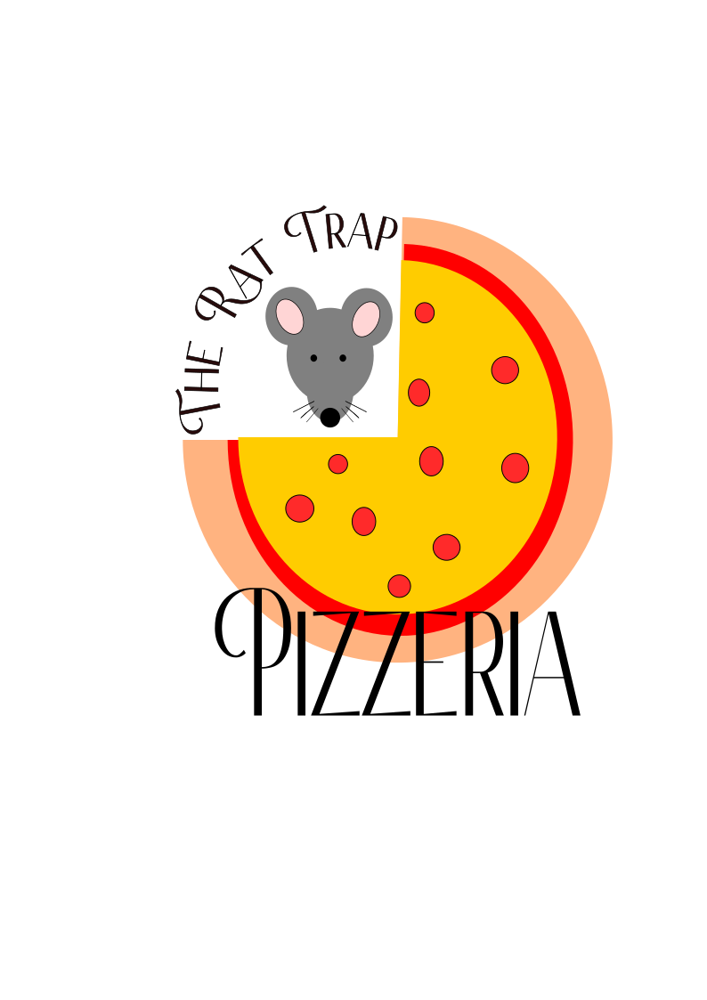

I created digital book cover for From Grape to Glass: The History of Wine Making using GIMP for photo editing and raster design. Using Inkscape, I created an original logo for The Rat Trap Pizzeria to demonstrate proficiency in vector graphic design.
Image Editing
Using GIMP and Inkscape.
Image Editing

I designed a digital book cover for From Grape to Glass: The History of Wine Making using GIMP, combining several graphic design techniques to create a visually appealing image. I began by selecting and editing high-quality images that reflected the theme of winemaking, using tools such as cropping and layering to create a cohesive composition. I adjusted the color balance, contrast, and saturation to enhance the richness of the imagery and create an inviting tone that matches the subject matter. In addition, I used raster design tools to add texture details to ensure smooth blending between elements. I also incorporated thoughtful typography choices, experimenting with font styles, spacing, and placement to achieve a clear and aesthetically pleasing title layout. Overall, this project demonstrates my ability to combine creative design principles with technical photo-editing skills to produce a professional, visually engaging book cover.
Learn MoreLogo

I created an original logo for The Rat Trap Pizzeria using Inkscape, which allowed me to showcase my skills in vector graphic design. I started by experimenting with the tools, such as adding shapes, curving text, and adding colors before making the final decision on what my logo would be for. Once I decided that I would be creating a pizza restaurant’s logo, I focused on choosing shapes and imagery that felt on-theme for a pizzeria while still being professional and easy to recognize. Throughout the process, I experimented with color palettes, line thickness, and layout until everything looked balanced and visually appealing. The final vector graphic design works well for both digital and print media, and can be scaled to any size without losing quality. This project gave me a chance to combine creativity with technical vector design skills to produce a polished, brand-ready logo.
Learn More